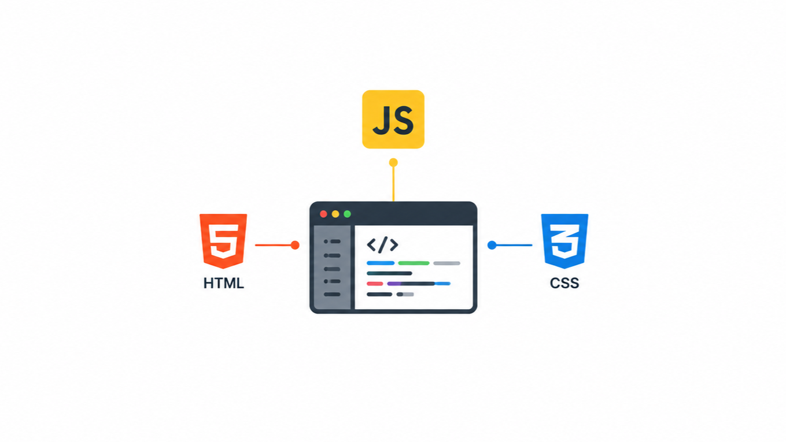

Un viaggio alla scoperta del web developing, Html Css JavaScript e le possibili applicazioni dell'IA nello sviluppo web

Questo elaborato è il risultato di uno studio autonomo che ho condotto nel corso di quest'anno sui linguaggi di programmazione usati per lo sviluppo web, quali Html Css e Javascript, in vista di quello che sarà il mio percorso universitario in ingegneria informatica
Crea sezioni dedicate ai tuoi interessi: tecnologia, viaggi, fitness, fotografia, business, arte, musica o qualsiasi altro tema.
il Front-end è la parte di un sito web che gestisce tutto ciò che l’utente vede e utilizza nel browser. È il risultato dell’uso combinato dei linguaggi HTML, CSS e JavaScript e si occupa dell’interfaccia utente e dell’esperienza di navigazione, cioè di come il sito appare e come si comporta durante l’uso.
HTML (HyperText Markup Language) è il linguaggio che serve a creare la struttura di una pagina web, cioè il contenuto come testi, immagini, titoli e link.
CSS (Cascading Style Sheets) serve a definire lo stile grafico della pagina web, come colori, font, spaziature e disposizione degli elementi.
JavaScript è il linguaggio che rende le pagine web interattive, permettendo animazioni, pulsanti funzionanti, moduli dinamici e altre azioni.
utilizzo dell'IA per lo sviluppo web, scorciatoia o opportunità?
L’Intelligenza Artificiale rappresenta una delle innovazioni tecnologiche più importanti degli ultimi anni. Con il termine IA si indicano sistemi capaci di simulare alcune capacità umane, come apprendere, analizzare dati, prendere decisioni e generare contenuti. Grazie all’evoluzione del machine learning e delle reti neurali, oggi l’AI viene utilizzata in moltissimi settori, tra cui medicina, marketing, sicurezza informatica e sviluppo web. Negli ultimi anni, strumenti basati su IA generativa hanno rivoluzionato il modo di progettare siti e applicazioni, rendendo lo sviluppo più veloce ed efficiente.
Uno dei primi ambiti del web ad essere influenzato dall’Intelligenza Artificiale è la SEO (Search Engine Optimization), cioè l’insieme delle tecniche utilizzate per migliorare il posizionamento di un sito sui motori di ricerca. Oggi molti strumenti IA sono in grado di analizzare parole chiave, suggerire contenuti ottimizzati e studiare il comportamento degli utenti online. Questo permette alle aziende di creare contenuti più efficaci e migliorare la visibilità dei propri siti web. Inoltre, anche i motori di ricerca utilizzano algoritmi basati sull’AI per comprendere meglio le ricerche degli utenti e mostrare risultati più pertinenti.
l’Intelligenza Artificiale sta diventando uno strumento fondamentale anche nello sviluppo web vero e proprio. Oggi esistono piattaforme capaci di generare codice HTML, CSS o JavaScript automaticamente a partire da semplici istruzioni testuali. Gli sviluppatori possono utilizzare l’AI per velocizzare la scrittura del codice, individuare errori, creare interfacce grafiche e automatizzare attività ripetitive. Questo non significa che l’AI sostituirà completamente i programmatori, ma che fungerà da supporto, aumentando la produttività e riducendo i tempi di sviluppo.
Nonostante i numerosi vantaggi, l’Intelligenza Artificiale presenta anche alcuni limiti. I sistemi IA, infatti, non sono sempre in grado di fornire risultati corretti e possono generare informazioni errate o righe di codice con problemi di funzionamento. Inoltre, un utilizzo eccessivo di questi strumenti potrebbe portare gli sviluppatori a dipendere troppo dall’automazione, riducendo la capacità di analizzare e risolvere problemi in autonomia. Esistono anche questioni legate alla privacy e alla sicurezza dei dati, poiché molte applicazioni IA elaborano grandi quantità di informazioni degli utenti. Per questo motivo, l’Intelligenza Artificiale deve essere vista come un supporto al lavoro umano e non come una sostituzione completa delle competenze dei programmatori.
Di Seguito alcuni link utili per chi vuole iniziare a imparare a sviluppare siti web